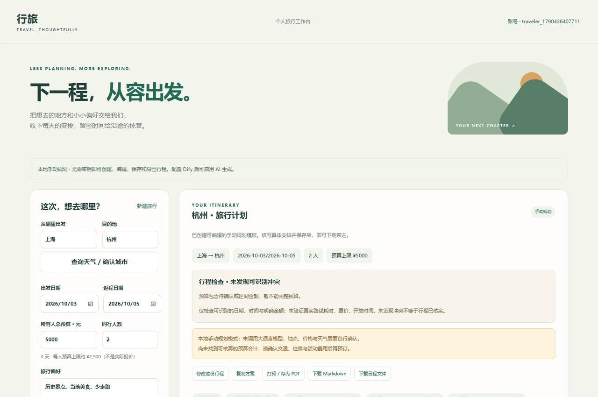
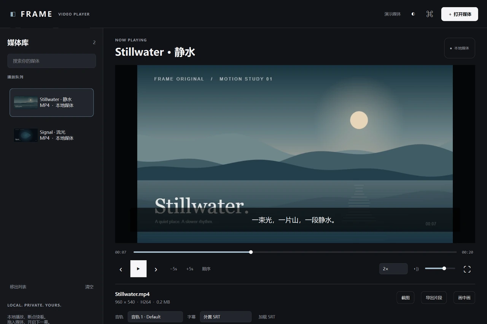
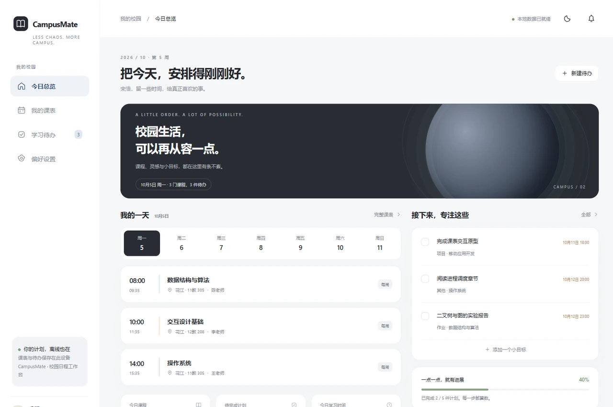
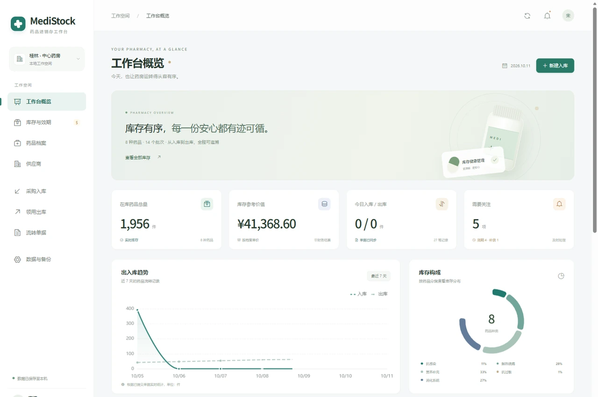
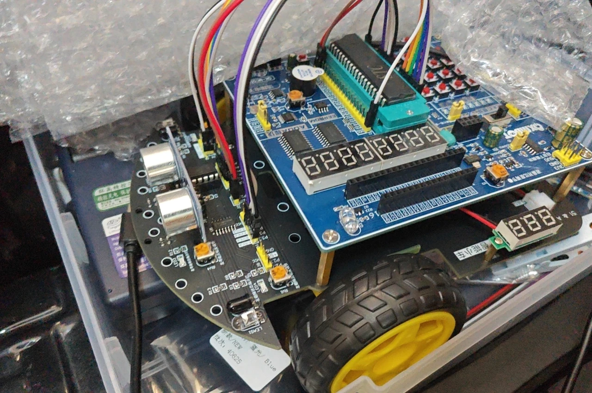
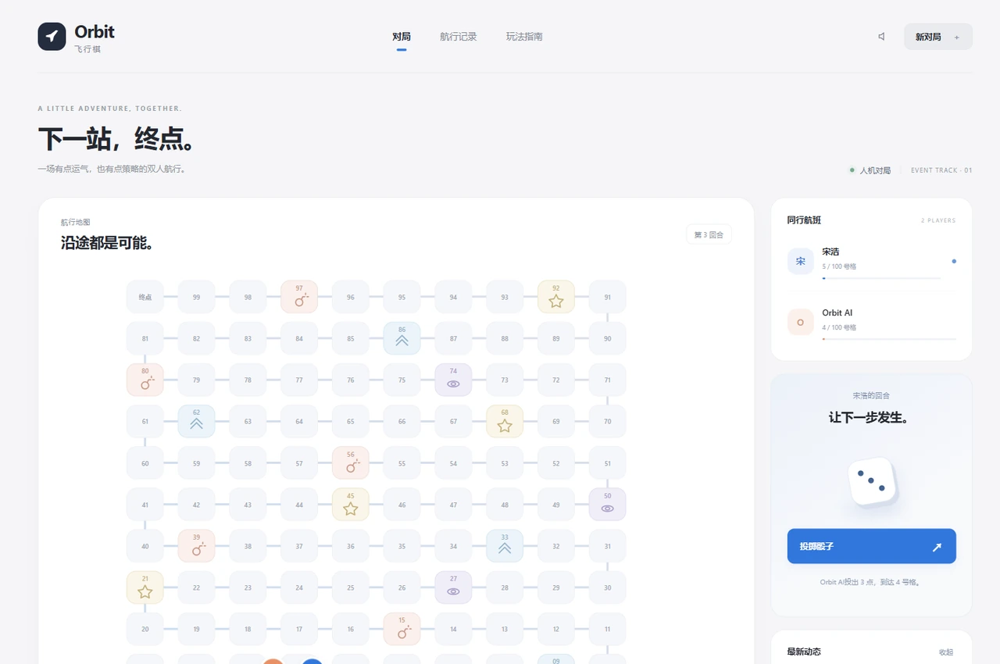
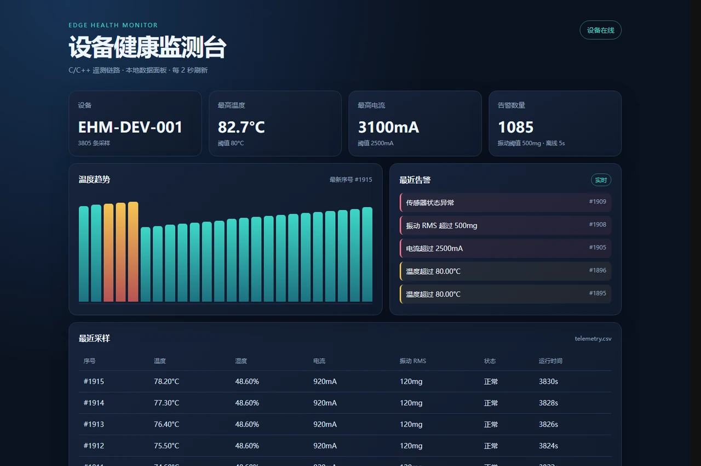

应用与数据 01
课选
实训课程选课与分配平台
把报名、志愿排序、名额分配和结果公示，组织成一条完整的课程流程。
了解项目SELECTED WORK
从课程报名到库存流转，
从屏幕里的交互到实物控制。
显示全部 8 个项目
应用与数据 01
实训课程选课与分配平台
把报名、志愿排序、名额分配和结果公示，组织成一条完整的课程流程。
了解项目应用与数据 02
智能旅行规划 Agent
从日期、预算和偏好出发，生成可以修改、保存和带走的旅行日程。
了解项目
客户端 03
Qt 本地影院播放器
围绕本地视频播放，把媒体库、字幕、观看位置和片段导出放进同一个原生窗口。
了解项目
客户端 04
校园课表与待办助手
把课程、周次和待办集中到校园日程中，让离线数据也能可靠保存与恢复。
了解项目
应用与数据 05
药品进销存工作台
从药品档案到批次库存，让入库、出库和单据追溯有据可查。
了解项目
控制与交互 06
多模式智能小车
贯通传感、控制和执行，完成寻迹、避障、蓝牙控制与整车调试。
了解项目
控制与交互 07
双人事件飞行棋
让棋盘规则、双人同步和完整回放，共享一套可验证的状态变化。
了解项目
控制与交互 08
边缘设备健康监测系统
把设备采样、串口数据与告警贯通到监控面板，沿完整数据链路观察设备状态。
了解项目
ABOUT ME
宋浩Hao Song
我是宋浩，桂林电子科技大学计算机科学与技术专业的 2027 届本科生。目前以 Java 应用开发为学习重点，结合已有项目持续补充数据库、接口和计算机基础。
我关注一个应用从需求到交付的完整过程：先梳理使用场景和业务规则，再通过具体操作、数据变化与异常反馈检查结果。希望在软件应用与技术交付相关的工作中，继续积累实践经验。
我的 GitHub计算机科学与技术 · 本科
2023.09 — 2027.06（预计）
CET-4 541 分
可阅读英文技术文档，进行基础英文沟通。
HOW I PRACTICE
课选围绕学生和管理员梳理报名流程；MediStock 把库存变化落实到批次与单据。
关注重复提交、事务回滚、存储失败与旧状态覆盖，结合代码和日志核对原因。
保留规则测试、接口记录、运行截图和验证范围，区分功能实现与实际测试结果。
从大学课程到持续实践，我围绕具体需求完善功能、整理技术思路，并通过操作流程与数据结果核对项目质量。